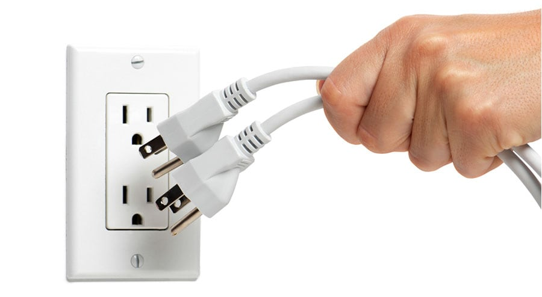

|  |
1. By unplugging unnecessary items in your homes, it will help you save electrecity and prevent a fire. Unplugging things like computers, TVs, and others that use a lot of electricity will prevent electricity from surging that would lead those devices to overheat and cause a fire |
 |
2. Things that require excessive forms of heat, like cooking, lighting a candle, or a fire place, needs to be supervised and not left alone. These flames, when left unattended, can become uncontrollable and can cause a fire. |
 |
3. Keeping flammable materials, such as paper or chemicals like hairspray, away from a common source of fire is a way to prevent the risk of house fires from occurring. |
|
4. Similar to unplugging electrical devices in our houses, turning off appliances that require heat -- heaters, hair straighteners/curlers, and more -- would save you from a fire starting. |
|
5. Checking electrical wires around your homes would allow you to predict what needs to be changed and what are completely fine. Faulty electrical wires could lead to sparks, which could further lead to fires. |